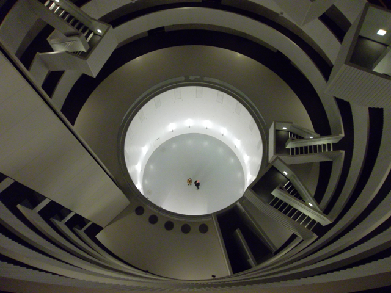

| 
Links// |
ResearchMy primary substantive and theoretical interests involve social and cognitive aspects of language variation and change. Much of my work is firmly sociolinguistic, in that it is interested in understanding language and linguistic patterns in their social context - often following in the quantitative traditions of sociolinguistic research spearheaded by scholars like William Labov and Walt Wolfram - although I often pursue research questions via approaches from computational linguistics, corpus linguistics, lab phonetics, and psycholinguistics. In terms of language varieties, I have conducted research on a number of dialects of American English and to a lesser extent Spanish, working in communities ranging from small towns in Oregon, Texas, North Carolina, and Newfoundland to communities of speakers in New York City. I also collaborate with scholars on variation and change in the United Kingdon (esp. with Dominic Watt and Carmen Llamas, at the University of York) and with scholars in Denmark (esp. Anne Fabricius and Nicolai Pharao and his colleagues at the LANCHART Centre). For over a decade I have collaborated with Valerie Fridland at the University of Nevada, Reno, on an NSF-funded project that has sought to understand the relationship between vowel production and vowel perception in U.S. regional vowel shifts (see some of our publications for more). In recent years, I have been a member of the international SPADE team, which, thanks to funding from the Trans-Atlantic Platform (T-AP) Digging into Data Challenge, is developing and applying software for large-scale speech analysis across diverse datasets. Another long standing set of projects, going back to my PhD dissertation, has sought to understand the social and cognitive parameters behind variability in speech timing (e.g., why do some talkers talk faster or slower than others? what influences a talker's speech rate and pause durations? how do aspects of speech timing relate to other variable processes of language production? See my 2013 book for more). In recent years I have worked and written extensively on topics in computational sociolinguistics (see for instance the Research Topic I co-edited for Frontiers) and about sociophonetics (see my 2021 book with Valerie Fridland, Sociophonetics). A long line of my work has focused on data management practices within the language sciences and I have published extensively on topics in linguistic data management. Since 2005 I have developed and managed the Sociolinguistic Archive and Analysis Project (SLAAP), a major repository of sociolinguistic data and tools, which is hosted at North Carolina State University. With support from the NSF, I led the development of The Corpus of Regional African American Language (CORAAL). and its umbrella project Online Resources for African American Language (ORAAL). CORAAL is the first public AAL dataset, providing access to a large amount of spoken language recordings across several African American communities. In addition to its wide use for research and educational purposes, CORAAL is an important resource for advancing speech technologies, such as by combatting bias in speech recognition systems (see e.g. Koenecke et al. 2020). I have also developed other linguistic software, such as the NORM suite for vowel plotting and normalization and, vowels.R, its related open-source package for the R statistical programming environment. I am also interested in topics in natual language processing, multilingualism (in the U.S., but also elsewhere, such as in Iceland), legal and forensic problems in linguistics, digital humanities, and public outreach and education about language diversity. See my publications, the LVC Lab page, and my other affiliations for more about my research. | |
|
Last updated: January 2023, Tyler Kendall | ||